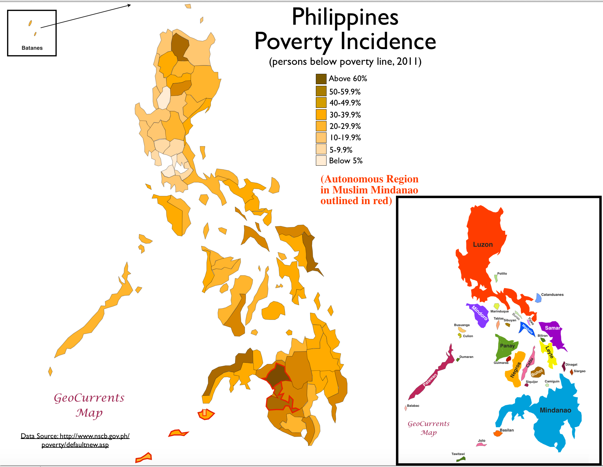

Statistical Information
Here are updated reports and statistics that highlight inequality in the Philippines, covering economics, social aspects, health, and the environment.
Economic Inequality
The Philippines has one of the highest inequality rates in Southeast Asia. The Gini coefficient stood at around 42.3% in 2018, showing wide income disparities. The top 1% of earners capture about 17% of national income, while the bottom 50% share only 14%. Although poverty fell from 49.2% in 1985 to 16.7% in 2018, income gaps remain.
Income and Poverty Comparison by Region
| Region | Poverty Incidence (%) | Average Monthly Income (PHP) | Access to Basic Services (%) |
|---|---|---|---|
| NCR (Metro Manila) | 3.9% | 30,000 | 96% |
| Central Luzon | 12.4% | 22,000 | 88% |
| Visayas | 24.8% | 15,000 | 75% |
| Mindanao | 32.1% | 12,500 | 67% |
Source & More Info: 2021 Family Income Inequalities (CAR-based Gini Coefficient Measure)
Source & More Info: Geography of Poverty & Social Development in the Philippines
Social Inequality
Social inequality is visible in education and labor opportunities. Many Filipinos still face job insecurity and limited access to higher education. Out-of-school youth reached 2.2 million in 2022. In addition, the Philippines ranks 102 out of 161 countries in Oxfam’s Global Inequality Index for 2022, reflecting weak policies on labor, taxation, and public services.
Education and Employment Access
| Indicator | Urban (%) | Rural (%) |
|---|---|---|
| High School Completion | 92% | 68% |
| Tertiary Education Enrollment | 56% | 28% |
| Stable Employment Rate | 72% | 51% |
| Internet Access | 85% | 40% |
Source & More Info: Income Inequality by Country (Statista)
Source & More Info: Recent Study on Inequality & Social Development (2025)
Health Inequality
Health outcomes are unequal between rich and poor Filipinos. About 28.8% of children under five years old are stunted (2019), mainly due to malnutrition and lack of access to healthcare. Wealthier Filipinos also face lifestyle-related illnesses: a study showed higher cardiovascular risks among the richest groups due to elevated cholesterol and glucose levels.
Health Outcomes by Income Group
| Health Indicator | Low-Income | Middle-Income | High-Income |
|---|---|---|---|
| Child Stunting (%) | 38% | 22% | 8% |
| Infant Mortality (per 1,000) | 28 | 17 | 8 |
| Access to Health Facilities (%) | 55% | 78% | 95% |
| Obesity / Lifestyle Disease Prevalence (%) | 12% | 21% | 32% |
Source & More Info: Investing in Child Nutrition & the Future (Rappler)

Source & More Info: Recent Study on Health & Inequality (2025)
Environmental Inequality
Environmental degradation and climate disasters disproportionately affect the poor. Typhoons, floods, and rising sea levels hit low-income households hardest due to unsafe housing and lack of resources. In rural areas, poor families rely heavily on climate-sensitive sectors like agriculture, worsening the cycle of poverty.
Impact of Climate Disasters by Income Group
| Indicator | Low-Income | Middle-Income | High-Income |
|---|---|---|---|
| Average Disaster Damage (₱ per household) | 75,000 | 40,000 | 15,000 |
| Recovery Time (months) | 18 | 9 | 3 |
| Relocation Rate (%) | 41% | 17% | 5% |
| Loss of Livelihood (%) | 53% | 28% | 9% |

Source & More Info: Climate Change in the Philippines (PAGASA)